Scroll the landing page, watch the review demo, then upload a sample contract and go through checkout. Names, partners and testimonials in the prototype are fictional.
This was a one-day design challenge. I audited the live site, set the hypotheses, and made the design decisions: structure, hierarchy, the buy flow and the visual direction.
The interactive prototype was built with AI, from my designs and direction.
RedlineMD sells an AI contract review to doctors signing their first job contract, for $199 instead of $500+ for an attorney. Most visitors come from Google Ads. A third of them arrive on a phone, but almost all the revenue comes from desktop.
Someone who clicked an ad usually has a contract in hand and a deadline. The page has one job: get them from that click to an uploaded, paid review.
On mobile, the current page was losing that sale before most visitors reached a button.
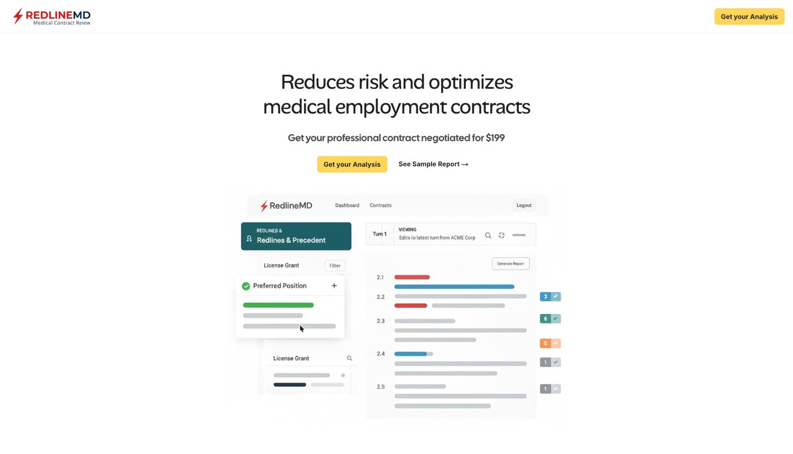
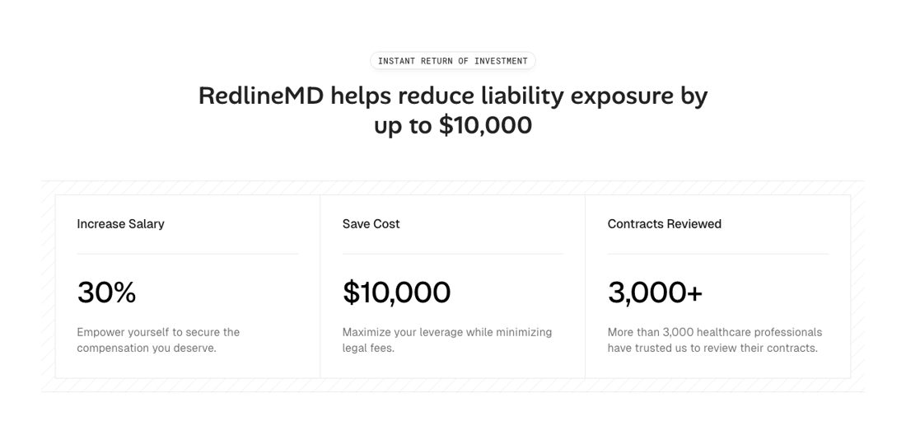
Without analytics access, I didn't want to redesign around a guess. The audit pointed to two different places mobile could be losing people, and each one shows up in a different number.
The buy button disappears for most of the page, and the one in the menu is hidden behind a tap.
If tap rate is normal but sales aren't, the leak is after the click, in the Google Form.
Above both sits the number the business cares about: mobile conversion rate, from ad click to paid review. The redesign addresses both hypotheses, and the two signals say which one moved it.
$199 alone reads as a number. Next to a $500+ attorney and a $10,000+ tail insurance bill, it reads as a bargain. The headline carries the comparison, and a price ladder beside it makes the ROI visible before any scrolling.
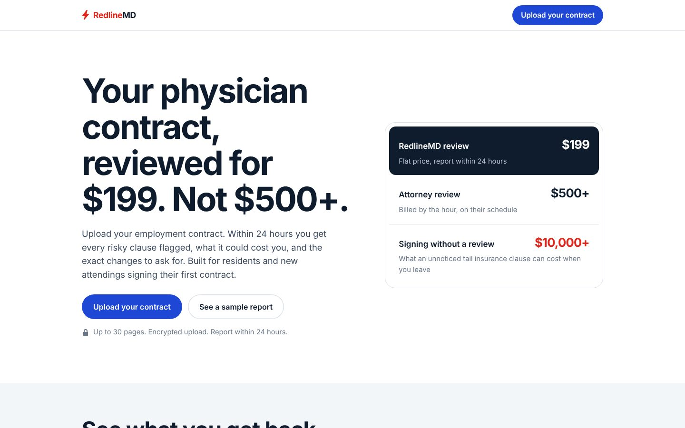
My first instinct was the right corner, for right-handed users. Thumb-zone research changed my mind: the top corners are among the hardest places to reach, and the bottom center is the easiest.
So on mobile, a full-width bar appears at the bottom once the hero button scrolls away, and hides at the final call to action. The menu icon is gone: with one action, there's nothing to put in a menu.
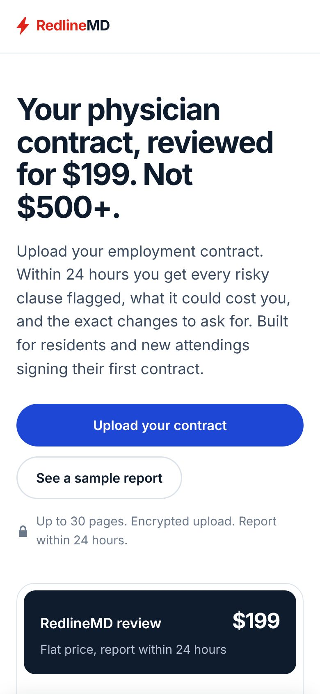
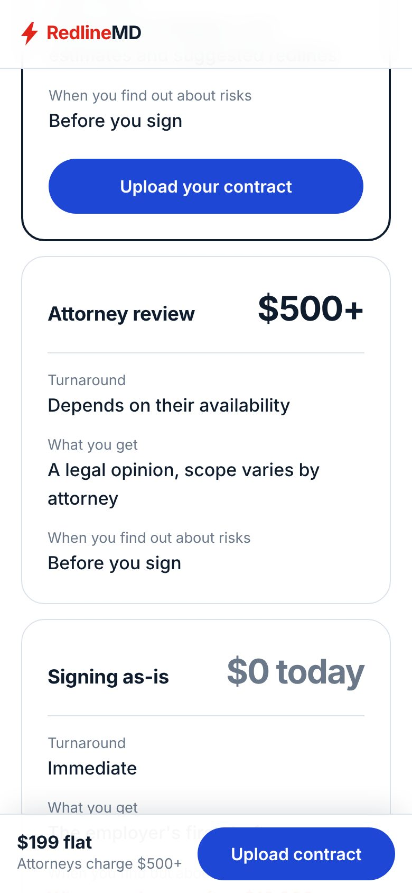
Static screenshots ask doctors to imagine the value. I replaced them with a looping demo: a contract is uploaded, risky clauses are flagged with what they could cost, and suggested redlines appear. Tapping a step jumps to it.
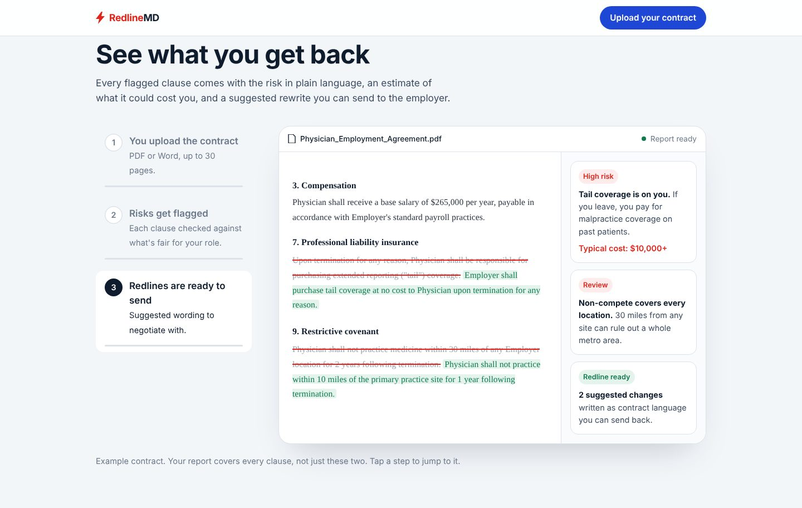
The ROI story becomes a side-by-side choice: RedlineMD, an attorney, or signing as-is. Signing as-is costs $0 today and often $10,000+ later. A short note explains tail insurance, since many new doctors only learn about it when they resign.
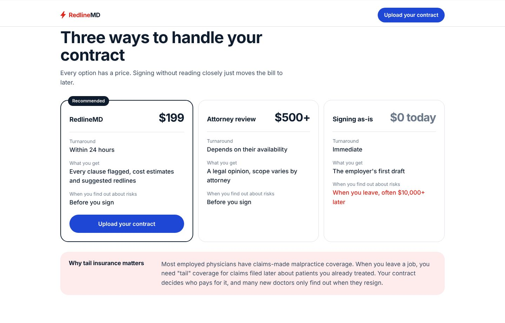
Trust has to come from someone other than RedlineMD. I ranked it: partners first, then testimonials with specialties and concrete outcomes, then an easy way to reach the team, with a one-hour reply. The footer now carries terms, privacy and an address.
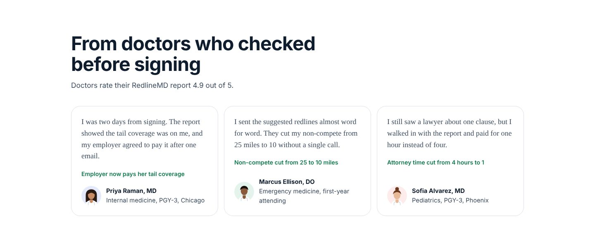
Before uploading a legal document, a doctor will ask: can I trust an AI with this, who sees my contract, is this legal advice, and what if it doesn't help? The FAQ answers each one on the page, so those questions don't become reasons to leave.
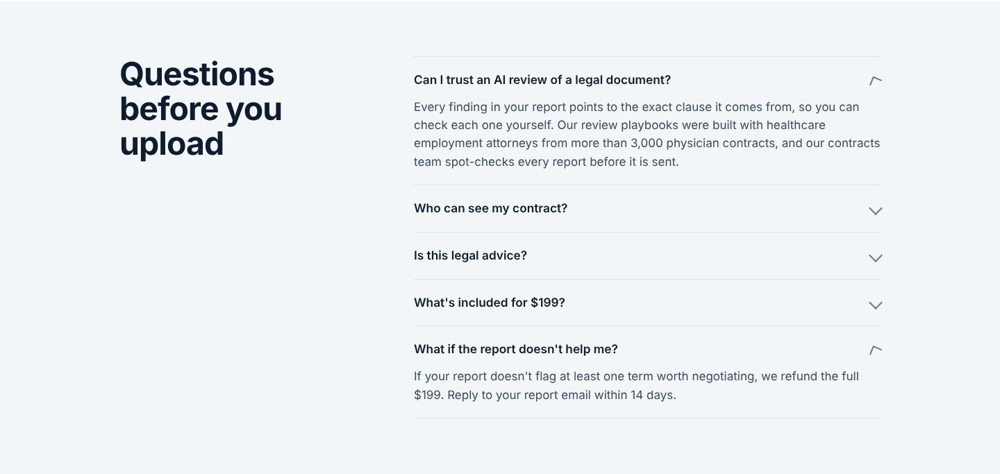
The Google Form became a dedicated flow. Doctors upload first and see a preview of their own contract, next to what the report will include. Payment comes only after that, when they know exactly what they're buying.
I kept it to three fields: email, specialty, and an optional sign-by date.
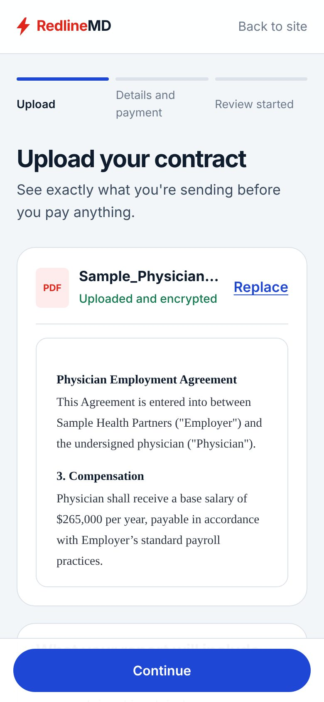
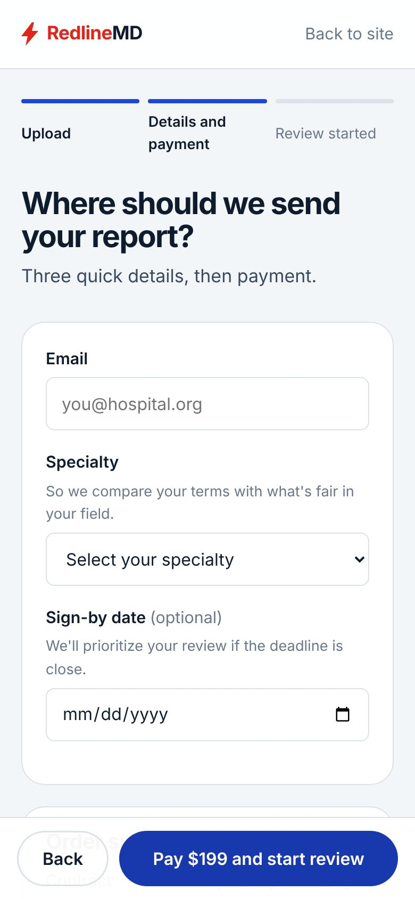
| Primary | Mobile conversion rate, ad click to paid review |
|---|---|
| Hypothesis 01 | Mobile CTA tap rate vs. desktop |
| Hypothesis 02 | Completion of upload, details and payment steps |
| Before launch | Task success in a usability test with doctors on mobile: "get your contract reviewed" |
The challenge was timeboxed to one hour. With only that, I'd ship in this order: